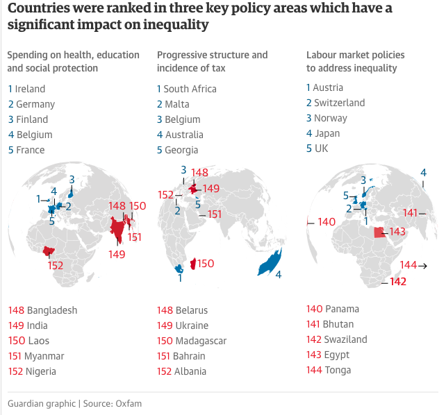
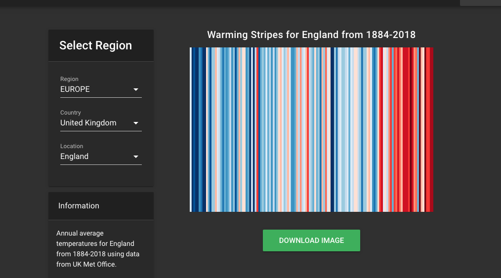

Introduction
In the following essay, I will examine the increase in the use of data visualisations techniques within society. I will argue that whilst data visualisation is not a new medium, its increased usage has been directly fed by the availability of big data sets. So much so that data visualisation as a medium is now being harnessed in some less traditional ways, which can benefit society. However there is a need for caution and individuals must understand the inherent problems that exist in this field.
In the first section of this paper, I will look at the historical development of data visualisation; examine the rise of big data, and how this has led to an increase in data visualisation. In the second section I will consider how truly transformational the effects of big data have been, by examining the how it is used in sectors that have not been so data-driven in the past. Finally, I will consider why there is a need to be cautious. I will examine potential issues with data sets, how data is collected and how it is represented.
How did data visualisation develop and what changed?
Data visualisation is not a new field. Throughout history, humans have developed techniques to represent information visually. From the cave paintings to the graphic representation of data in modern sciences, there has always been a need for information to be presented graphically.
Early evidence indicates to us that exploration has played a vital role in this area. According to Drucker (2014), some of the earliest visualisations were diagrams mapping the stars by ancient cultures. Rendgen also points to the desire to explore and understand our world as an important early driver in the development of the visual representation of knowledge. In some of her work, she examines maps and charts made in the Middle Ages. ‘New geographic discoveries found their way into world maps. Guided by descriptions brought home by seafarers, cartographers were able to provide increasingly accurate visual information about our world’ (Rendgen 2012, p. 12).
Science has also played a key role in developments in this area. Yau (2013) refers to early examples of pie charts and bar graphs from 1786 that document global trading patterns, all created by hand. These visualisation techniques have been a central point of scientific analysis for hundreds of years and are still in use today.
The visual representation of knowledge, has developed over centuries, and been harnessed in ways according to the needs of the time. However, we can now note that there have been vast improvements in technology. Drucker (2014) reminds us that technology has always played an important role in visual knowledge production. She refers to advances of copperplate engraving to improve the reproduction of materials. As we can now see modern times are no different in this respect, and advances in technology are playing an intrinsic role in our ability to manage, create, process and share knowledge.
In the last thirty years, the rise of the Internet and smart technology has led to extensive changes in society and the mass digitisation of data. For example, our exercise habits are monitored by Fitbits, loyalty cards monitor our shopping habits, our friendships are monitored on social media networks, our fridges are connected to the internet and listening devises are in our homes. This has led to the large-scale collection of data, otherwise known as Big Data and the Dataficaiton of our lives. Datafication is the process of turning things into digital data and then turning that data into information. Today, data can come from anywhere. According to Kirk (2016), data can be anything from names, amounts to locations. Data can be textual or numeric and is typically stored in table form. In this form, it is often referred to as raw data. Yau (2013) describes a data set as something that can tell a story about a particular subject. It can describe the world it comes from and allows you to compare and contrast.
However, raw data can only give us so much. Data stored in table form is useful for its organisation, and it is easy to pinpoint specific values. However, in this format, it is not easy to ascertain patterns or relationships. We cannot derive meaning from it. The larger the data set the harder this gets. To do this we must represent the data in visual form (Kirk, 2016).
With such volumes of data relatively accessible the drive to turn data into information, data visualisation has become an increasingly popular technique to help us make sense of the things around us. Kirk defines data visualisation as ‘The representation and presentation of data to facilitate understanding’ (Kirk, 2016, p. 19)
Yau (2013) is keen to emphasise that data visualisation as a medium. He presents it in this way so a not to limit its uses to statistical analysis alone. He sees that visualisation has become a spectrum of work that explores and presents data to express meaning. Work can take the form of statistical graphics, entertainment to data art. Which means that visualising data is no longer the preserve of scientists or cartographers.
Data visualisations are useful because they allow the viewer to interpret and understand the data much quicker than having to plough through endless spreadsheets or text. Rendgen tells us ‘Compared with long-winded text, infographics are often amazingly effective. Facts are presented in an orderly way, connections are easily understood, and statistics are made intelligible’ (Rendgen, 2012, p. 11)
They are also useful because visualisations can persuade us in a way text-based arguments do not. Hepworth (2016) draws our attention to the power of visualisations to convey a message. Any communication that relies on our visual or oral senses is what is known as immersive communication. Immersive communication will act by triggering an emotional response. This emotional response is what makes data visualisations a powerful tool.
Just as technological advances have given us the data, they have also provided us with the tools to analyse it. For instance, for the amateur, Microsoft Excel is readily available and using this software you can turn your raw data into a visual chart in a matter of seconds. There are also far more specialist tools available. Yau (2013) list a vast spectrum of software and programming tools such as Tableau you can choose from, depending upon the type of visualisation you want to produce. Advances in web technologies have also allowed us to add animation and interaction to the data, enhancing the level of exploration that is possible.
How are data visualisations being used today?
Science has been at the forefront of data visualisation for centuries, and as you can expect, industry and businesses have adopted data visualisation techniques to help them push for improved profit, target adverting and make efficiency savings. However, this medium has infiltrated way beyond scientific or commercial business uses. Here I would like to look at three areas that have adopted data visualisation to push for the ‘greater good’. The areas I would like to examine are Data Journalism, Environmental Activism and Data Art.
With the influx of such large amounts of digital data, a new field of journalism has opened up. Data-driven journalism is becoming increasingly important. Journalists have recognised that there is a need not only to provide an interesting narrative but also to have that story backed up with quantitative data is incredibly powerful. According to Grey (2012), Data Journalism can help tell a complex story with engaging infographics, it can use programmes to comb through large amounts of data to uncover a story, it can make connections between large amounts of documents and help link the data back to the individuals' perspectives.
In 2009 the Guardian launched its Data blog, which paved the way for data journalism to become increasingly integrated with its mainstream news stories. According to the Guardian its self over the last decade it has published thousands of stories and datasets on every topic imaginable, from Reading the Riots, to how the UK fared in every Eurovision song contest, and its influence lives on throughout our data journalism.(Guardian, 2019)
An example of the sort of work the Guardian has produced is the following visualisation. The article is examining governmental policies and the commitment to reduce inequality. The visualisations itself presents global rakings in three areas and shows the best and worst countries in those areas. Here we can see that the Guardian has is using visualisation to illustrate complex issues and promote understanding.
Environmental activism and the ‘cause’ of climate change is a real beneficiary of advances in this field. Concepts of climate change are often very obscure, especially for those of us that are not seeing such obvious changes to the environment. Therefore, there is a need to present the data in an accessible way. Guiltierrez and Milan state, ‘data can be a useful vehicle for engaging bystanders’ (Guiltierrez and Milan, 2019, p. 8). They see that data visualisations have empowered activist in a way that was not previously possible, and enabled them to reach new and bigger audiences.
An example of climate change data visualisations is called ‘Warming Stripes’. The coloured stripes represent the data for over a hundred years. The bluer colours represent the cooler temperatures and the red colours are representing hotter temperatures. This visualisation is representing the data in an incredibly simple way. The creator of the visualisation is climate scientist Ed Hawkins. He points the simplicity of the visualisation that makes it able to get the message over very effectively and reach the broadest audience (Hawkins, 2019). Here you can also see how visualisations can now be interactive. You can access the visualisation on a website and select your region. This has the effect of making it much more relevant to individuals everyday lives.
Data visualisation has even made its way into the realm of fine art. Often referred to as data art. Unlike Data Journalism and Environmental activism, the motivations for working with data are not so clear. Each artist would have their view of why they are using data as a medium of expression. As Yau (2013) explains it is hard to pin down what data art is. But he feels that it is more about making a relationship to numbers or experiencing data in different ways. Nack and Evers (2016) explain that an artist might be interested in rather idiosyncratic reasons to approach big data, they might be interested in data that reveal hidden realities, or taboos in society, they might be interested in power structures Nack and Evers,2016 , p. 780).
It is unlikely that such visualisations would have and scientific validity. Most visualisations in this area would allow the viewer to engage with the data on an aesthetic and conceptual level (Corby, 2008). To illustrate this point we can look at the work of Tom Corby and Gavin Baily. Here we discover their Cyclone project. The project brings together two data sets. The first takes NASA metrological data of cyclonic storms, and the second take live streams from online forum discussions promoting extremist points of view. In their words 'The project confronts the way that hate speech and ‘alt facts’ are penetrating public discourse through technological platforms, ultimately affecting our body politic, bodies and natural environments; a process we describe as the ‘data abject’' (Corby and Baily, 2005).
Why is there a need to exercise caution?
There is a need to consider this subject with caution. Potential issues with the neutrality of data sets, ethical issues with the collection of data and miss-representation of the data all cloud this arena.
The first issue I would like to consider here is that there may be potential issues with the date itself. There is a widespread assumption that data is neutral. However, this is not true. The ways data sets are produced such as scientific studies, surveys and algorithms can all have their own inbuilt bias or can be flawed. An organisation may produce statistical analysis from data drawn from their database. However, that analysis is only as good as the initial data entry, where data may be missing or even entered incorrectly. Healy (2019) reminds us that visualisation may be well designed, but if it contains bad data it will still mislead.
According to Christiansen (2019) scientific practice accepts that there can be inherent problems with data, and studies are replicated and theories are refined over time. However, with data visualisation, there is a tendency to present one data set as a single truth.
We are now beginning to see some very problematic issues being recognised with regards to bias in data. Benjamin (2019) points out that technology has the potential to recreate and even exacerbate existing biases within society. We can see how this manifests its self when we examine issues that have been identified in the application of facial recognition technology. Bacchini and Lorusso (2019) set out to examine this issue and found clear evidence that the use facial recognition technology across western societies does perpetuate racial bias, and even increases the severity of the bias experienced by communities that have been historically disadvantaged. Sadly however, this is just one example, amongst several high profile issues that have recently hit the news in recent years.
The second issue I would like to address, that there could be potential ethical concerns with how that data has been collected or ‘mined’. According to Kennedy (2016), social media mining techniques are being more commonly used in social research. Some of the data collected from social media can be relatively benign. However, social media is a rich source of personal data. This throws up more complex issues of personal privacy and the ethics of collecting and using such data. Gleib (2012) argues that such social research should not be exempt from the usual ethical standards. Ordinarily, in social research, the participants must grant informed consent. But if data is being scraped from social media sites in large quantities is it even possible to get informed consent? (Kennedy 2016).
I would like to consider what it is that we need to know about our data on social media. Twitter clearly states in its privacy policy, which has been updated for 2020, that all pubic tweets are viewable to anyone around the world. ‘Twitter is public and Tweets are immediately viewable and searchable by anyone around the world.’ (Twitter, 2019). The emphasis is on the user to protect themselves. A user must make sure that the settings are correct otherwise they will share your data. ‘Subject to your settings, we also provide certain third parties with personal data’ (Twitter, 2019).
Facebook does refer to GDPR, and it considers anything in the profile fields ‘Data with special protections’ (Facebook, 2019). However, it is clear that is willing to share any other information on the site with almost anyone – it lists advertisers, measurement partners, partners providing goods and services, vendors and service providers, researchers and academics, and law enforcement and legal requests which are willing to share your data (Facebook, 2019). The privacy policy also states that anyone in your network can also share your information. Facebook points out that you should consider who you choose to share with, because people who can see your activity on our Products can choose to share it with others on and off our products, including people and businesses outside the audience that you shared with. (Facebook, 2019).
So it is clear that our data can be accessed without informed consent, even after the introduction of GDPR. So if you are using social media platforms, and so many of us are, you should consider how you feel about this.
The third issue I would like to discuss this the issue of how that data may be represented. Drucker (2012) points out that visual representations of knowledge have always been seen as suspect. According to Drucker (2012), the mathematician Rene Thorne asserts that visual codes are too imprecise and unreliable to be considered a reliable form communication.
However, there is a tendency to take data visualisations as truth. Burn-Murdoch (2013) points out that we consume information more quickly if it is presented in visual form. He feels that this is linked to the way we are educated. We are more likely to be critical of data written in a text, than of that same data presented in visual form. Therefore, data visualisations are more likely to be taken on face value.
Another factor to recognise it that visualisations of data will provide a narrative promote understanding of the data that can be considered subjective. Kirk (2016) argues that there can often be multiple truths hidden in a data set. What is included in a visualisation, what is left out, the colours, shapes and design can all lead to a subjective perspective on the data. Boehnert (2015) also tells us that visualisations are never able to give us the full truth. Visualisations based on large data sets often result in a reduction the complex reality. Therefore, they are always a reflection of the ideological and political agendas of the creator.
Data Visualisation clearly can be a powerful tool. However, the use of flawed data sets, data collected in unethical ways or visualisations presenting a subjective version of the truth can impact on our lives. There is a widespread lack of transparency in data collection and visualisation of data and our lack of understanding can lead to abuses of power. Tutfe (2006) tells us that in the face of potential corruption we must remain open-minded, but not empty-headed. We must look out for the cues. Not only must we be able to interpret the visualisation we must also be able to question its validity. Instead of letting our emotional side take over, we must let our rational side analyse what it is presented to us. Hepworth states, ‘To understand, and take seriously, how visualisations affect both our conscious and unconscious judgments is to reduce the risk of misuse’ (Hepworth, 2016, p.19). We must ask ourselves is it clear where the data comes from, and who is producing this visualisation, what are their motives and how is it paid for. The best visualisations will give us answers to these questions. They will be transparent.
In conclusion, we can see that modern data visualisations are born out of a long and rich history. Advances in technology and the data revolution have to lead to an increased need to represent data visually. As such this has meant that we are seeing the techniques being used in new areas, and in some very interesting, experimental ways, and reaching large audiences. While in many respects this is a very positive thing. There is a need to exercise caution and understand the potential for miss use. As a viewer, we need to understand that this is a powerful tool and that there can be inherent problems with how the data is produced, collected and even represented.